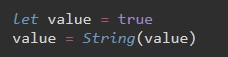
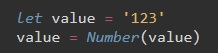
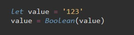

Есть 8 основных типов данных
Этот оператор возвращает тип аргумента. У typeof есть два синтаксиса:
как оператор - typeof x
как функция - typeof(x)
преобразование в строку
преобразование в число
логическое преобразование
Если значение переменной null то вернутся false, если значение переменной задано, то вернется true
str.toUpperCase - возвращает строку в верхнем регистре (str - переменная типа string)
str.toLowerCase - переводит в нижний регистр
num.toFixed(n) - округляет переменную num до n знаков после запятой